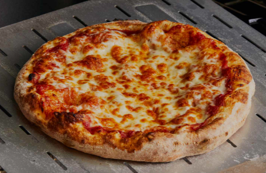

HASAN REVIEWS
My Favourite Foods
1.Biryani
Origin: INDIA
- Biryani is a mixed rice dish, mainly popular in South Asia.
- It is made with rice, some type of meat (chicken, goat, pork, lamb, beef, prawn, or fish) and spices.
To cater to vegetarians, in some cases, it is prepared by substituting vegetables or paneer for the meat.
Sometimes eggs and/or potatoes are also added
2.Pizza
Origin: ITALY

- Pizza is a traditional Italian dish
- Typically consisting of a flat base of leavened wheat-based dough topped with tomato,
cheese, and other ingredients, baked at a high temperature, traditionally in a wood-fired oven.
3.Noodles
Origin: China
- The most common noodles are derived from Chinese cuisine
- Noodles are a type of food made from unleavened dough which is either rolled flat and cut, stretched,
or extruded, into long strips or strings. Noodles are a staple food in many cultures and made into a variety of shapes.
THANK YOU FOR YOUR TIME